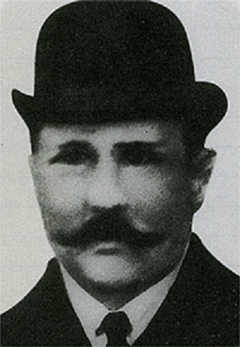
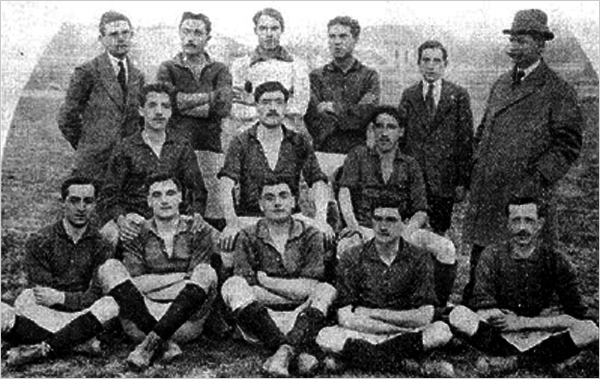
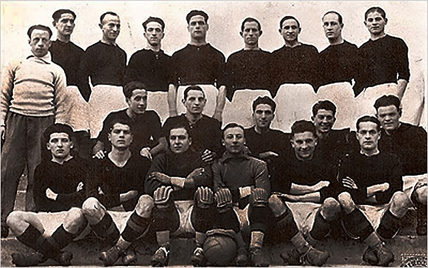
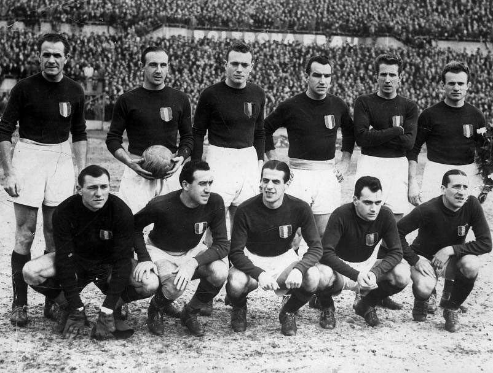
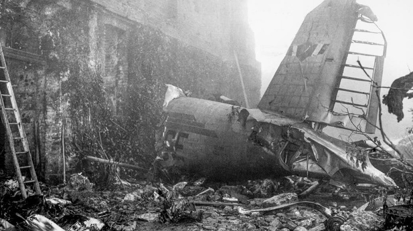
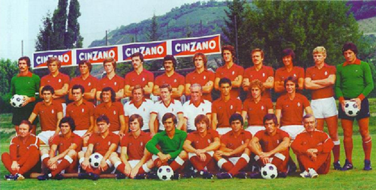
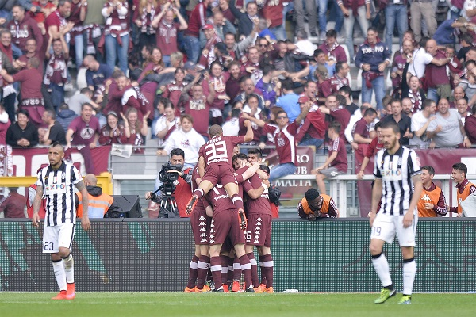
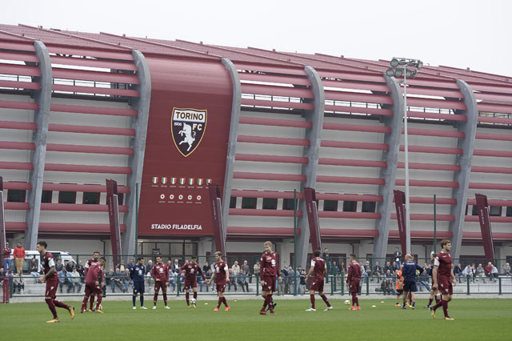

Leggenda, mito, tradizione, storia. Quella del Toro è, per certi versi, la storia stessa del calcio italiano. Nella città di Torino, infatti, il calcio arrivò sul finire dell'Ottocento, su iniziativa di industriali svizzeri ed inglesi. Già nel 1891 nel capoluogo piemontese la compagine calcistica dell'Internazionale Torino, presieduta dal Duca degli Abruzzi, svolgeva la sua attività; nel 1894 in città le squadre divennero due, con la fondazione del Football Club Torinese. La squadra Internazionale Torino venne assorbita nel 1900 da FC Torinese.
La vera svolta per la squadra, che in quegli anni vestiva una maglia giallonera a strisce verticali, giunse il 3 dicembre 1906. Nella birreria Voigt (oggi bar Norman) in Via Pietro Micca, venne sancita un'alleanza con un gruppo di dissidenti della Juventus, guidati dallo svizzero Alfredo Dick. Dalla fusione tra l'FC Torinese ed il gruppo di dissidenti nacque il Football Club Torino, considerata da molti la più antica società calcistica d'Italia. Il primo Presidente fu Hans Schoenbrod, giocatore di modesta caratura ma dirigente appassionato, nominato dallo stesso Dick per il primo anno di vita della società. Per molti anni le partite del Torino si disputeranno al velodromo Umberto I, la stessa struttura che l'8 maggio 1898, in occasione dell'Esposizione Internazionale per i cinquant'anni dello Statuto Albertino, ospitò il primo Campionato Italiano di Calcio.
La nuova società cambiò i colori sociali in granata, abbandonando i colori giallo-nero a strisce verticali. Sono due le versioni che spiegano l’origine della scelta del granata: per alcuni ad introdurre il nuovo colore sociale fu lo stesso Alfredo Dick, tifoso del Servette, squadra di Ginevra dai colori granata; per altri le ragioni del granata nacquero invece da radici più nobili. In onore del Duca, Presidente Onorario, venne scelto il colore della Brigata Savoia che nel 1706, esattamente duecento anni prima, dopo la vittoriosa liberazione di Torino assediata dai francesi, aveva adottato un fazzoletto color sangue in onore del messaggero caduto per portare la notizia della vittoria.
Il primo incontro ufficiale venne giocato il 16 dicembre 1906 a Vercelli contro la Pro Vercelli, e terminò 3-1 per i granata. Il primo derby venne disputato il 13 gennaio 1907: il Toro si impose per 2-1. Un mese più tardi seguirà un’altra vittoria contro la Juventus, questa volta per 4-1.
Nei primi campionati disputati il Torino colse un ottimo secondo posto nel 1907, mentre nei tornei successivi i granata si attestarono sempre tra il 3° ed il 4° posto. Nel 1912 entrò a far parte dello staff tecnico Vittorio Pozzo che nel 1914 porterà il Toro in una tournée transoceanica in Sud America. Si trattò di una cavalcata trionfale, il Toro di Pozzo arrivò a vincere sei partite su sei giocate, con squadre di valore indiscusso quali il Corinthians brasiliano e la Nazionale argentina. Al ritorno dalla vittoriosa tournée i granata trovarono un'atmosfera ben diversa ad attenderli: in Europa stava per scoppiare la Prima Guerra Mondiale.
Al termine della guerra il campionato riprese nell'ottobre del 1919. Anche il Torino, come altre squadre, aveva perso molti dei suoi giocatori al fronte. La ripresa fu in sordina, i granata giunsero terzi nel girone piemontese, alle spalle di Pro Vercelli e Juventus. Anche nella stagione 1920/21 non esisteva ancora il Girone unico ma una serie di gironi regionali. Il Torino terminò il suo girone di semifinale del nord Italia a pari merito con il Legnano e divenne necessaria una gara di spareggio. Quella contro il Legnano sembra sia stata la gara ufficiale più lunga mai giocata in Italia. Al termine dei tempi regolamentari il risultato si attestò sull’1-1, quindi seguirono due tempi supplementari di 30 minuti ciascuno alla fine dei quali il risultato era ancora in parità. L’arbitro decise di far disputare un terzo supplementare ma dopo 8 minuti le squadre, sfiancate, si arresero, si strinsero la mano e rinunciarono a proseguire. La ripetizione, di comune accordo, non venne mai disputata e lo scudetto di quell'anno fu appannaggio della Pro Vercelli, che batté il Pisa nella finalissima.
L’annata 1926/27 vide l'inaugurazione dello stadio Filadelfia: l’avvenimento venne festeggiato il 17 ottobre del 1926 con una vittoria per 4-0 ai danni della Fortitudo Roma. La squadra dell'anno 1926/27 era allenata da Schoffer e composta da Bosia, Balacics, Martin II, Colombari, Janni, Sperone, Carrera, Baloncieri, Libonatti, Rossetti, Franzoni. Una grande formazione che infatti si aggiudicò il titolo il 10 luglio 1927, battendo 5-0 il Bologna secondo in classifica. Il titolo venne poi revocato il 3 novembre dello stesso anno, per un presunto tentativo di corruzione di Allemandi, terzino della Juventus, avvenuto in occasione del derby disputato il 5 giugno del 1927 e vinto dal Torino per 2-1 con gol di Balacics. Si era già alla fine del campionato quando il giornale “Lo sport” di Milano pubblicò la notizia di un broglio a favore del Torino, notizia ripresa dal “Tifone” di Roma ed ampliata da un giornalista che abitava nella stessa pensione di Allemandi. Lo scudetto venne revocato mentre Allemandi fu squalificato a vita. Il titolo italiano nel 1927 non fu assegnato, ma Allemandi fu amnistiato e scontò alla fine solo un anno di squalifica grazie all’ottimo comportamento degli Azzurri alle Olimpiadi di Amsterdam.
L’anno successivo il Torino si riconfermò Campione d’Italia, mettendo a tacere tutte le polemiche. Dopo l’annullamento dello scudetto precedente la squadra reagì con il capitano Baloncieri grande trascinatore. Fu una cavalcata trionfale. Divennero storiche alcune goleade come l'11-0 al Brescia e al Napoli e il 14-0 alla Reggiana, tutte al Filadelfia. Anche il trio delle Meraviglie non fu da meno: Libonatti, Baloncieri e Rossetti misero a segno rispettivamente 35, 31 e 23 gol, per un totale di 89 reti in tre. Questa la formazione vincitrice del primo scudetto: Bosia, Martin III, Martin II, Martin I, Colombari, Sperone, Vezzani, Baloncieri, Libonatti, Rossetti, Franzoni. Il tanto atteso tricolore, che il Toro si aggiudicò il 22 luglio pareggiando con il Milan 2 a 2, venne degnamente festeggiato con una tournée-vacanza in Sud America.
Dopo 15 anni il Torino vinse di nuovo lo scudetto, il primo dei cinque consecutivi. Nella stagione 1942/43 il Toro si aggiudicò anche la seconda Coppa Italia con un record senza precedenti: 5 vittorie su 5 partite contro Anconetana, Atalanta, Milan, Roma e Venezia, 20 reti fatte e 0 subite. A causa della seconda guerra mondiale il campionato del 1944 venne diviso in due gironi: i bombardamenti rendevano difficile lo spostamento delle squadre. Il Torino assunse il nome Torino-Fiat e schierò anche Silvio Piola al fianco di Mazzola e Gabetto. Lo scudetto di guerra lo vinse, a sorpresa, il 42° Reggimento dei Vigili del Fuoco di La Spezia, in finale contro il Torino, sconfitto 2-1. Il campionato cercò di tornare lentamente alla normalità a partire dalla stagione 1945/46: il torneo, tornato su scala nazionale, prevedeva ancora una prima fase territoriale, figlia delle difficoltà logistiche che ancora la facevano da padrone in Italia. I granata trionfarono ampiamente nel girone eliminatorio e andarono poi a conquistare lo scudetto battendo la Juventus nello scontro diretto alla penultima giornata e cucendosi definitivamente al petto il tricolore negli ultimi novanta minuti, quando rifilarono nove reti al Livorno, mentre i cugini bianconeri non andarono oltre il pari a Napoli. E' il secondo scudetto dell'era Novo, il terzo della storia del Toro. Ancora più roboante il successo nella stagione successiva, quella del 1946/47: i granata partirono bene e terminarono meglio. Se fino a metà campionato i giochi rimasero aperti, non così avvenne nella seconda parte del torneo, quando Mazzola e compagni inanellarono una striscia di sedici risultati utili consecutivi (di cui 14 vittorie) e si aggiudicarono così nuovamente lo scudetto. Il Torino era una squadra che giocava bene, divertiva e faceva sognare. L'attacco quell'anno risultò stellare: 104 reti segnate, quasi tre gol a partita di media, e Mazzola che a fine anno conquistò la palma di capocannoniere. Quello della stagione 1947/48 fu non solo il miglior Toro di tutti i tempi, ma anche una delle più forti squadre di sempre. La classifica dei bomber fu vinta da Boniperti con 27 reti, Mazzola ne segnò 25 e Gabetto 23. Questi i primati stabiliti dai granata nella stagione 1947/48: massimo punteggio in classifica, 65 punti in 40 gare; massimo vantaggio sulle seconde classificate, 16 punti a Milan, Juve e Triestina; vittoria in casa più netta, 10-0 all’Alessandria; 29 vittorie complessive su 40 partite giocate; maggior sequenza di gare utili, 21 partite senza mai perdere, dalla ventesima alla quarantunesima, con 17 vittorie e 4 pareggi; maggior numero di punti in casa, 39 su 40; 19 partite vinte su 20 al Filadelfia; maggior numero di reti segnate, ben 125; minor numero di reti subite, solo 33.
La sequenza trionfale del Grande Torino si interruppe tragicamente il 4 maggio 1949 alle ore 17,05. I giocatori del Torino tornavano a casa da una trasferta a Lisbona per una partita contro il Benefica, concordata tra i due capitani delle squadre. Mazzola e Ferreira si erano conosciuti in occasione della gara tra Italia e Portogallo giocata a Genova. Ferreira chiese a Capitan Valentino di disputare con un’amichevole contro il Torino in occasione del suo addio al calcio. Mazzola si disse d’accordo e l'intesa fu presto raggiunta. L’incontro fu fissato per martedì 3 maggio 1949 ed il Torino ottenne dalla Federazione il permesso di anticipare al 30 aprile la sfida con l’Inter. La gara contro il Benfica fu una vera amichevole, la formazione granata sconfitta 4-3 con grandi applausi al capitan Ferreira che abbandonava il calcio, in uno stadio gremito da quarantamila persone.
Il giorno seguente, il 4 Maggio, l'intera squadra salì sul trimotore I-Elce per fare ritorno a casa. Il tempo era pessimo con nuvole basse e pioggia battente. Dopo l'ultimo contatto con la stazione radio, forse a causa del maltempo o di un guasto all’altimetro, l'aereo si schiantò contro la Basilica di Superga, avvolta in una fitta nebbia. Erano le 17,05 del 4 maggio 1949.
Lo sgomento fu enorme ed il compito più triste di tutti toccò a Vittorio Pozzo, che dovette procedere al riconoscimento delle salme dei suoi ragazzi. Nella tragedia di Superga perirono trentuno persone fra atleti, dirigenti, giornalisti e membri dell'equipaggio. Nell'incidente persero la vita: i giocatori Valerio Bacigalupo, Aldo Ballarin, Dino Ballarin, Emile Bongiorni, Eusebio Castigliano, Rubens Fadini, Guglielmo Gabetto, Ruggero Grava, Giuseppe Grezar, Ezio Loik, Virgilio Maroso, Danilo Martelli, Valentino Mazzola, Romeo Menti, Piero Operto, Franco Ossola, Mario Rigamonti, Giulio Schubert e gli allenatori Egri Erbstein, Leslie Levesley, il massaggiatore Ottavio Cortina con i dirigenti Arnaldo Agnisetta, Andrea Bonaiuti ed Ippolito Civalleri. Morirono inoltre tre dei migliori giornalisti sportivi italiani: Renato Casalbore (fondatore di Tuttosport), Renato Tosatti (Gazzetta del Popolo) e Luigi Cavallero (La Stampa) ed i membri dell’equipaggio Pierluigi Meroni, Celeste D’Inca, Celeste Biancardi e Antonio Pangrazi.
Una lunga, ininterrotta processione rese omaggio alle bare allineate a Palazzo Madama e mezzo milione di persone partecipò ai funerali il 6 maggio 1949. L'intera città di Torino si strinse attorno alla squadra, vero simbolo di un'epoca. Erano presenti alle esequie rappresentanze di tutte le squadre italiane e di molte squadre straniere, un giovane Andreotti in nome del governo ed il Presidente della Federazione Gioco Calcio, Ottorino Barassi, che fece l'appello della squadra come dovesse scendere in campo. Scrisse Indro Montanelli: "Gli eroi sono sempre immortali agli occhi di chi in essi crede. E così i ragazzi crederanno che il Torino non è morto: è soltanto in trasferta."
La stagione 1948/49 fu portata a termine dalla formazione giovanile del Torino, che disputò le restanti quattro gare contro le formazioni giovanili delle altre squadre. Il Torino vinse tutte le rimanenti partite, chiudendo il campionato 1948/49 con 60 punti, cinque di vantaggio sull’Inter, seconda in classifica. Ma fu un trionfo amaro, segnato dall’indelebile ricordo della tragedia. Il 26 maggio 1949 venne organizzata allo stadio Comunale una partita il cui incasso era destinato ai familiari delle vittime. Contro il grande River Plate si schierò il Torino Simbolo, un gruppo di undici fuoriclasse prestati da tutte le squadre, che indossarono la maglia granata. Per il Toro giocarono Sentimenti IV, Manente, Furiassi, Annovazzi, Giovannini, Achilli, Nyers, Boniperti, Nordhal, Hansen, Ferrari II, Lorenzi, mentre stella degli argentini era Di Stefano. In un Comunale al limite della capienza la partita-spettacolo terminò 2-2. Aveva così inizio il dopo-Superga.
La stagione 1975/76 si aprì con un cambio di allenatore: Radice in panchina ed una squadra fortissima, arricchita dall’arrivo di Caporale, Pecci e Patrizio Sala. Una stagione entusiasmante, segnata dai “gemelli del gol” Graziani e Pulici, serviti dagli assist di Claudio Sala. Il Toro si aggiudicò lo scudetto con 45 punti, due di vantaggio sulla Juventus. Il titolo arrivò al termine di una rimonta ai danni proprio della Juve, che in primavera aveva 5 punti di vantaggio sul Toro. Ma tre sconfitte consecutive dei bianconeri, la seconda delle quali proprio nel derby di ritorno, consentirono al Toro il sorpasso. L’ultima giornata, con il Torino in vantaggio di un punto e, fino ad allora, sempre vittorioso al Comunale, terminò con un pareggio con il Cesena di Marchioro e con la sconfitta della Juve a Perugia.
Era il settimo scudetto, festeggiato da settantamila tifosi in delirio per il titolo, conquistato 27 anni dopo Superga. Pulici si aggiudicò anche il titolo di capocannoniere, con 21 reti, seguito da Graziani, con 15 gol. La formazione era: Castellini, Santin, Salvadori, Patrizio Sala, Mozzini, Caporale, Claudio Sala, Pecci, Graziani, Zaccarelli, Pulici.
La stagione 2013-2014 parte con l’auspicio di riportare il Torino nella parte sinistra della classifica, ovvero tra le prime dieci. Sale l’asticella delle difficoltà, dunque aumentano pure le responsabilità. Dopo cinque stagioni si congeda dal Toro un grande beniamino dei tifosi, Bianchi, e memore di una vecchia promessa fatta al diretto interessato il Presidente Cairo non tarpa le ali all’ascesa della carriera di Ogbonna, attratto da una sontuosa proposta della Juventus. In entrata, a dispetto degli scettici, il numero uno granata realizza un grande colpo di mercato acquistando a titolo definitivo Cerci dalla Fiorentina, dopo peraltro aver già riscattato alcune colonne del Toro di Ventura: su tutti Darmian e Glik, pilastri della difesa. Le altre scelte del Presidente e del ds Petrachi mescolano sapientemente esperienza (Bovo, Moretti, Farnerud) e gioventù (Maksimovic, El Kaddouri, Immobile). Proprio quest’ultimo, arrivato in compartecipazione dalla Juventus e quindi non senza una miope critica preventiva, diventerà l’uomo copertina: non solo del Torino, ma di tutta la serie A laureandosi capocannoniere del campionato e anche in virtù di ciò meritandosi la convocazione ai Mondiali del Brasile. Tre i giocatori del Torino selezionati dal ct Prandelli: appunto Immobile, poi Cerci e Darmian. Il mutamento di sistema di gioco, passando dal 4-2-4 al 3-5-2, è un’altra felicissima intuizione di Ventura. L’undici granata sciorina infatti un campionato d’avanguardia, praticamente sempre nella parte nobile della classifica, disputando la miglior stagione degli ultimi 22 anni. Quasi raddoppiate le vittorie (15 contro 8 della precedente stagione) per un settimo posto finale, con 57 punti: un risultato tale da conquistare l'accesso ai preliminari di Europa League (dopo l'esclusione del Parma, che aveva preceduto i granata al sesto posto). Dopo 12 anni di assenza, il Toro torna in Europa.
La stagione 2015-2016 vede il Torino condurre un campionato tranquillo, di centro classifica. Di rilievo per l’importanza che ha avuto nella leggendaria storia granata, è la giornata del 17 ottobre. Esattamente 89 anni dopo la prima inaugurazione avviene la posa della prima pietra del cantiere di ricostruzione dello stadio Filadelfia. La casa del Toro, la culla di tutti i successi granata: dal primo tricolore conquistato grazie alle prodezze del trio Baloncieri-Rossetti-Libonatti sino all’epopea del Grande Torino, capace nonostante la seconda Guerra Mondiale di vincere cinque scudetti consecutivi e di giocare 100 partite consecutive in casa senza mai perdere. E poi ancora lo scudetto del 1976 e le coppe Italia conquistate anche quando il Filadelfia, dal 1963 sino al 1993, divenne il centro sportivo per gli allenamenti della prima squadra e per la florida attività del Settore giovanile. Demolito nel luglio del 1997 con la fallace promessa di una immediata ricostruzione, finalmente dopo tanto, troppo tempo, ecco la posa della prima pietra, di fronte a migliaia di persone, visibilmente emozionate. Un orgoglio per tutto il mondo granata, sotto la gestione del Presidente Cairo, grazie a un finissimo lavoro di mediazione che dopo polemiche e infiniti litigi ha riunito tante persone di buona volontà a raggiungere l’obiettivo comune: dalle istituzioni politiche a quelle sportive, senza naturalmente trascurare l’apporto dei tifosi e di alcuni media sempre assai sensibili al destino del Fila.
La stagione 2021-2022 è quella del riscatto. In panchina arriva il tecnico Ivan Juric, reduce da due positive stagioni a Verona dove ha ottenuto lusinghieri risultati. Anche in granata Juric presenta un calcio propositivo e intenso, esaltando la tecnica dei suoi migliori interpreti e la coesione del gruppo. Dal mercato arrivano giovani prospetti destinati a crescere con la necessaria esperienza. Il Toro ritrova pertanto una sua precisa identità e i tifosi si entusiasmano rivedendo quel tremendismo che è scolpito nel dna granata. La squadra disputa un campionato solido e torna nelle posizioni che gli competono, nella parte sinistra della classifica: alla fine sarà decimo posto, con 50 punti, frutto di 13 vittorie, 11 pareggi e 14 sconfitte. Una base importante su cui costruire un organico sempre più competitivo.
